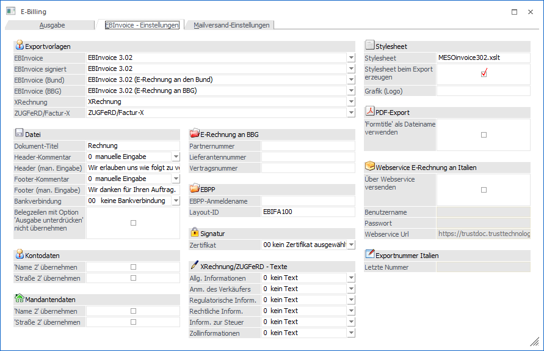
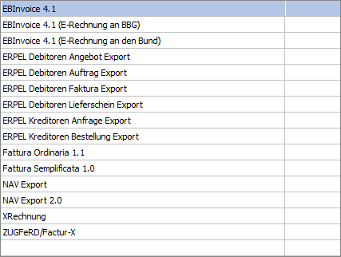
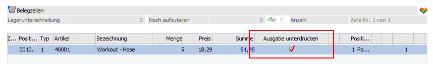
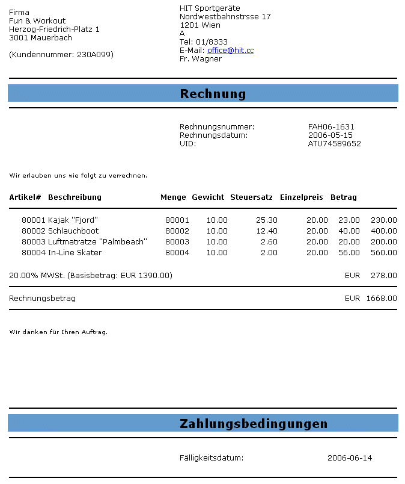
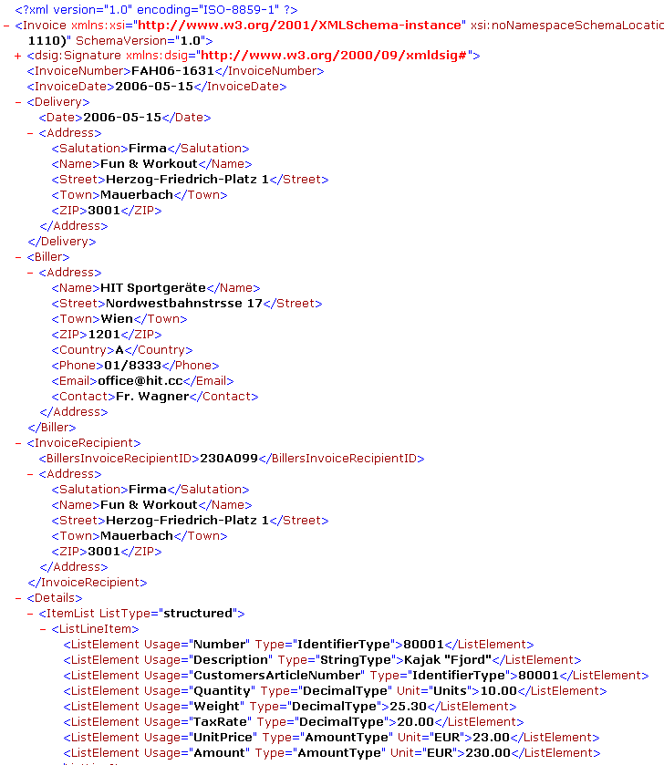
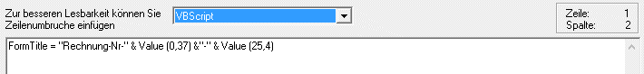
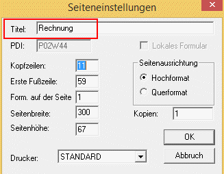
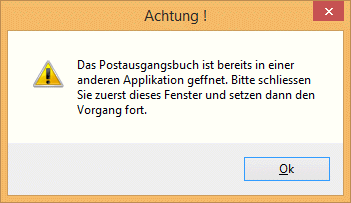
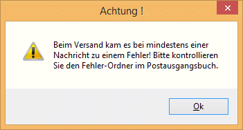

In diesem Register können verschiedene Einstellungen, die zu "exportierende" Datei betreffend, hinterlegt werden. Einstellungen zum Dokumententitel, zu Bankverbindung, zur Signatur, usw..
Dazu gibt es folgende verschiedenen Bereiche.

Exportvorlagen
Für die Beleg-, bzw. Exporttypen die Export-Vorlagen verwenden, können über die Auswahllistboxen die benötigten Vorlagen ausgewählt werden.
Zur Auswahl stehen hier (neben selbst definierten Vorlagen) folgende Vorlagen:

Zu diesen Vorlagen können im Menüpunkt "XML-Import/XML-Vorlagen" die einzelnen Definitionen angesehen werden. Ein Ändern oder Löschen dieser Vorlagen ist nicht möglich.
Datei
Ø Dokument-Titel / Header-Kommentar / Footer-Kommentar
In diesen Feldern können beliebige Texte vergeben werden, die in weiterer Folge in die XML-Datei geschrieben werden.
Für den Header-Kommentar sowie für den Footer-Kommentar stehen zusätzlich zur Hinterlegung eines manuellen/fixen Wertes weitere Möglichkeiten zur Verfügung. Nachdem in EBInvoice-Dateien (z.B. E-Rechnungen an den Bund) keine Belegmittelteilszeilen des Typs3-Text übernommen werden können, besteht die Möglichkeit einer Textübergabe als "Header"-Text aus folgenden Feldern: Notizfeld 1-10 aus dem Belegerfassen/Register "Text", bzw. aus der ersten Belegmittelteilszeile sofern es sich um einen Zeilentyp 3-Textzeile handelt.
Ø Bankverbindung
Für die Erstellung einer Datei ist es zwingend erforderlich eine Bankverbindung anzugeben. Aus der Auswahllistbox können jene Banken gewählt werden, die im Bankenstamm angelegt sind.
Ø Belegzeilen mit der Option "Ausgabe unterdrücken" nicht übernehmen
Durch Aktivieren dieser Option werden Belegmittelteilszeilen (Artikelzeilen), die die Option "Ausgabe unterdrücken" gesetzt haben, nicht in die EBInvoice-Dateien übernommen.

D.h. bei folgenden Belegtypen hat diese Option Auswirkung:
ü 1 EBInvoice (signiert)
ü 2 EBInvoice (unsigniert)
ü 5 EBInvoice (signiert) + PDF-Ausgabe (unsigniert)
ü 12 EBInvoice (E-Rechnungen an den Bund)
ü 13 EBInvoice (E-Rechnungen BBG)
ü 14 EBInvoice (unsigniert) + PDF-Ausgabe (unsigniert)
Kontodaten
Ø Name 2 übernehmen
Durch Aktivieren der Checkbox wird festgelegt, dass bei ebInterface-Dateien der "Name2" zusätzlich zum eigentlichen Kontonamen in das entsprechende Feld in der ebInterface-Datei übernommen wird.
Ø Strasse 2 übernehmen
Durch Aktivieren der Checkbox wird festgelegt, dass bei ebInterface-Dateien die "Strasse2" zusätzlich zum eigentlichen Eintrag im Feld "Strasse" in das entsprechende Feld in der ebInterface-Datei übernommen wird.
Mandantendaten
Ø Name 2 übernehmen
Durch Aktivieren der Checkbox wird festgelegt, dass bei ebInterface-Dateien der "Firmenname2" (aus dem Mandantenstamm) zusätzlich zum eigentlichen Firmennamen in das entsprechende Feld in der ebInterface-Datei übernommen wird.
Ø Strasse 2 übernehmen
Durch Aktivieren der Checkbox wird festgelegt, dass bei ebInterface-Dateien die "Strasse2" (aus dem Mandantenstamm) zusätzlich zum eigentlichen Eintrag im Feld "Firmenanschrift" in das entsprechende Feld in der ebInterface-Datei übernommen wird.
E-Rechnung an BBG
In den Feldern
Ø Partnernummer (Pflichtfeld in der XML-Datei)
Ø Lieferantennummer
Ø Vertragsnummer (Pflichtfeld in der XML-Datei)
müssen die jeweiligen Daten hinterlegt werden, die in weiterer Folge in der EBInvoice-Datei (XML-Datei) an BBG (Bundesbeschaffung GmbH) übergeben werden.
EBPP
Ø EBPP-Anmeldename
Für die Erstellung einer Datei mit der Option "2 EBInvoice unsigniert" ist es zwingend erforderlich einen "EBPP-Anmeldenamen" anzugeben. Dieser ist von der EBPP GmbH zu erhalten und in diesem Feld zu hinterlegen.
Ø Layout-ID
Die Layout-ID wird von der EBPP (GmbH) vorgegeben und sollte, ausgenommen es wird eine spezielle Vereinbarung mit der EBPP getroffen, immer die bereits vorbelegte ID verwendet werden (derzeit EBIFA100).
D.h. auch dass diese Einstellung nur Verwendung findet wenn der Belegexport mit der Option "2 EBInvoice unsigniert" vorgenommen wird und EBPP die Signatur und Archivierung durchführt.
Signatur
Ø Zertifikat
Zum Signieren von Fakturen im Menüpunkt "E-Billing/Export" wird ein Zertifikat benötigt. In der Auswahllistbox stehen jene Zertifikate zur Verfügung, die auf der jeweiligen Workstation installiert sind.
XRechnung/ZUGFeRD - Texte
Ø Allg. Informationen/Anm. des Verkäufers/Regulatorische Inform./Rechtliche Inform./Inform. zur Steuer/Zollinformationen
Diesen Feldern einer XRechnung können Texte in Form der 10 möglichen Textzeilen aus dem Belegkopf (Belegkopfnotizen) zugewiesen werden. In der Auswahllistbox stehen folgende Möglichkeiten zur Verfügung:

In der XML-Datei der entsprechenden Rechnung werden diese Freitexte mit dem dazugehörigen Code zur Qualifizierung erzeugt. Z. B. Code "AAI" für allgemeine Informationen.
Stylesheet
Ø Stylesheet
In diesem Eingabefeld muss ein Stylesheet (xslt-Datei) angegeben werden womit die XML-Dateien im Browser als "Klartext" dargestellt werden können. D.h. dieser Eintrag ist fix in der XML-Datei hinterlegt.


Ist das Stylesheet beim Öffnen der XML-Datei (im entsprechenden Verzeichnis) nicht vorhanden, so wird im Browser die XML-Struktur dargestellt.

Ø Stylesheet beim Export erzeugen
Zum Erzeugen eines Stylesheets muss diese Option aktiviert werden. Beim Export von XML-Dateien (ausgenommen sind hier die EBInvoice-Formate) wird das Stylesheet erzeugt und in der XML-Datei darauf verwiesen.
Ø Grafik (Logo)
In diesem Feld kann eine Internetadresse angegeben werden auf der sich die Grafikdatei befindet.
Z.B. https://meinefirma.com/EBPP_Files/firmenlogosmall.gif
Dies hat den Vorteil, dass jemand der eine exportierte Rechnung (XML-Datei) erhält und Zugriff auf das Internet hat, auch diese Datei automatisch angezeigt bekommt.
PDF-Export
Ø "Formtitle" als Dateiname verwenden
Durch Aktivieren dieser Option wird der Name des Dokuments, der mit der Funktion "FormTitle=" im entsprechenden Rechnungsformular erzeugt wurde bzw. über die Seiteneinstellungen des Formulars definiert ist, als Dateiname für den Export verwendet.
Beim Export wird diese Einstellung bei den "Beleg-Typen" 4-PDF-Ausgabe signiert bzw. 11-PDF-Ausgabe unsigniert verwendet.


Sollte durch die Einstellung des Dokumentennamens es zu gleichen Dateinamen kommen, so wird an den Dateinamen ein hochlaufender Zähler angehängt (z.B. "Rechnung (1)").
Webservice E-Rechnung an Italien (um diesen Bereich nutzen zu können, muss die entsprechende Lizenz "eBilling IT" vorhanden sein)
Ø Über Webservice versenden
Durch Aktivieren dieser Checkbox können E-Rechnungen an den "italienischen Bund" erzeugt und übermittelt werden. Wird diese Option aktiviert, so werden die nachfolgenden Felder "Benutzername" und Passwort" zur Eingabe freigeschalten".
Hinweis
Übermittelt werden für den Bereich "eBilling IT" und Webservice nur Belege mit dem Exporttyp "3 XML-Exportvorlage". Bei allen Exporttypen erfolgt ein entsprechender Hinweis und der Versand wird abgebrochen.
Ø Benutzername
Hinterlegung des Benutzernamens zur Übermittlung der E-Rechnung mittels Webservice.
Ø Passwort
Hinterlegung des Passwortes zur Übermittlung der E-Rechnung mittels Webservice.
Ø Webservice Url
In diesem Feld kann jene Url angegeben werden, die für die Übermittlung via Webservice verwendet werden soll.
Exportnummer Italien
Ø Letzte Nummer
Neben der Rechnungsnummer müssen italienische E-Rechnungsdateien mit einer eindeutigen Identifikationsnummer versehen werden. Diese Nummer wird sowohl in den XML-Tag <ProgressivoInvio> als auch in den Dateinamen geschrieben.
Diese eindeutige Nummerierung der Dateien kann vom Benutzer frei gestaltet werden, wobei auch alphanumerischen Kombinationen zur Verfügung stehen.
Für Mandanten mit der Ländereinstellung "Italien" kann diese Nummer im Feld "Letzte Nummer" vergeben werden, bzw. wird in diesem Feld die zuletzt verwendete Exportnummer angezeigt.
Achtung!
Wird eine alphanumerische Nummerierung verwendet, so darf die Länge der Identifikationsnummer max. 5 Zeichen betragen.
Register "Mailversand-Einstellungen"
In diesem Register können verschiedene Einstellungen zum Mailversand angegeben werden. Dazu gibt es die verschiedenen Bereiche.
Mailversand
Ø Mailversand
Mit Belegen die mittels E-Billing/Export erzeugt werden, kann wie folgt verfahren werden:
ü 0 kein Mailversand: XML-Dateien und/oder PDF-Dateien werden im jeweiligen Verzeichnis abgelegt.
ü 1 Mail sofort senden: XML-Dateien (und/oder PDF-Dateien) werden über das Postausgangsbuch versandt. Die Mails werden im Ordner "Gesendet" (WinLine Postausgangsbuch) abgestellt.

ü 2 Mail im Postausgangsbuch speichern: XML-Dateien und/oder PDF-Dateien werden im Postausgangsbuch im Ordner "Entwürfe" abgelegt und können von dort versandt werden.

In beiden Varianten des Mailversands darf das Postausgangsbuch in keiner "anderen" Applikation geöffnet sein. Dazu erfolgt auch ein entsprechender Hinweis;

Hinweis:
Zum Versand der Mails wird jene Mailadresse herangezogen, die in der Auswahllistbox der konfigurierten Mailadressen ausgewählt wird. Diese Mailadresse hat zu diesem Zeitpunkt die höchste Priorität. D.h. auch wenn zusätzlich z.B. das Postausgangsbuch geöffnet wird, und dort ebenfalls eine "eigene" Mailadresse dafür hinterlegt wäre, bleibt trotzdem in der Auswahllistbox jene Mailadresse erhalten, die zum menüpunkt "E-Billing/Export" angegeben wurde.
Ø Kopie an eMail-Adresse
In diesem Feld kann eine E-Mail-Adresse angegeben werden, an die eine Kopie des exportierten Beleges gesandt werden soll.
Ø Stylesheet per Mail versenden
Beim Versand der Belege per E-Mail kann auch das angegebene Stylesheet mit versandt werden. Dazu muss diese Option aktiviert werden.
Ø Versand inkl. Anhänge
Wird diese Option aktiviert, so wird im Register "Ausgabe" eine zusätzliche Tabelle mit den vorhandenen Archiveinträgen zum jeweiligen Beleg angezeigt (Archiveinträge die zum Beleg hinzugefügt wurden). Standardmäßig ist darin bei allen vorhandenen Archiveinträgen die Option "Auswahl" gesetzt. Dadurch werden diese Archiveinträge entsprechend beim Mailversand mit einbezogen.
Ø Textbaustein verwenden
Um für den Mailversand (für den Mailtext) einen Textbaustein verwenden zu können, muss diese Option aktiviert werden.
Ø Textbaustein
In diesem Feld kann der Name eines Textbausteines (zu finden im WinLine-START Programm) angegeben werden, der als Mailtext verwendet werden soll. Zur Unterstützung steht dazu der Textbaustein-Matchcode zur Verfügung.
Ø Text
Im Feld "Text" kann jener Text hinterlegt werden, der beim Mailversand der Dokumente herangezogen werden soll. Diese Eingabemöglichkeit steht nicht zur Verfügung, wenn bereits ein Textbaustein als Mailtext verwendet wird.
Ø Grafik per Mail versenden
Sollte eine Grafik beim Mailversand der Belege als eigene Datei mit geschickt werden, muss zum einen diese Option aktiviert werden, und im Eingabefeld der Grafik der (lokale) Pfad sowie der Dateiname der Grafik angegeben werden. Z.B. F:\Mesonic\WinLine\Grafiken\Firmenlogo_small.gif
Ø Serieller Versand
Durch Aktivieren dieser Option erfolgt der Versand der einzelnen Mails nacheinander. Im Gegensatz dazu (bei nicht aktivierter Option) werden die Mails gleichzeitig (parallel) verschickt. Diese Option ist nur verfügbar, wenn für den Mailversand die Einstellung "1 Mail sofort senden" gewählt ist.
Hinweis:
Sollte es beim Versenden der Mails zu einem Fehlerfall kommen (Server nicht erreichbar o.ä.), erfolgt eine
entsprechende Meldung.

Im Postausgangsbuch wird das Mail bei dem es zum Fehlerfall gekommen ist im Ordner "Fehler" abgelegt, alle folgenden Mails im Ordner "Entwürfe". Von dort können die Mails in weiterer Folge erneut versendet werden.
Ø An selben Empfänger
Durch Aktivieren dieser Option wird festgelegt, dass der Mailversand an jene Mailadresse(n) erfolgt, die im nachfolgenden Feld "Empfängeradresse" angegeben wird. Die Spalte "eMail-Adresse" im Register "Ausgabe" wird bei aktivierter Option ausgeblendet.
Ø Empfängeradresse
Dieses Feld wird zur Eingabe freigeschalten, wenn die Option "An selben Empfänger" aktiviert wurde. Es kann hier eine, bzw. durch Strichpunkt getrennt, mehrere Mailadressen angegeben werden. Dieser Eintrag ersetzt jenen aus dem Register "Ausgabe".
Buttons

Ø OK
Durch Drücken des OK-Buttons (im Register "EBInvoice-Einstellungen") werden die getroffenen Einstellungen gespeichert und automatisch ins Register "Ausgabe" gewechselt.
Ø Ende
Durch Drücken des Ende-Buttons wird das Fenster geschlossen. Alle getätigten, und nicht gespeicherten Eingaben werden dabei verworfen.
{kind=link}